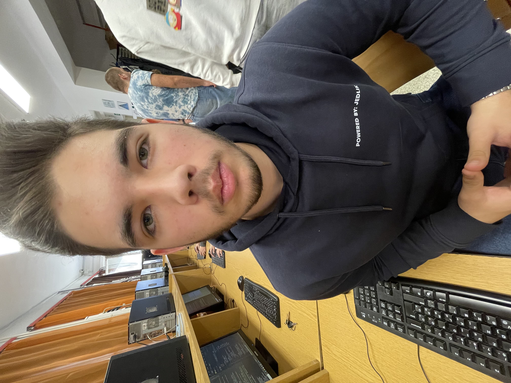
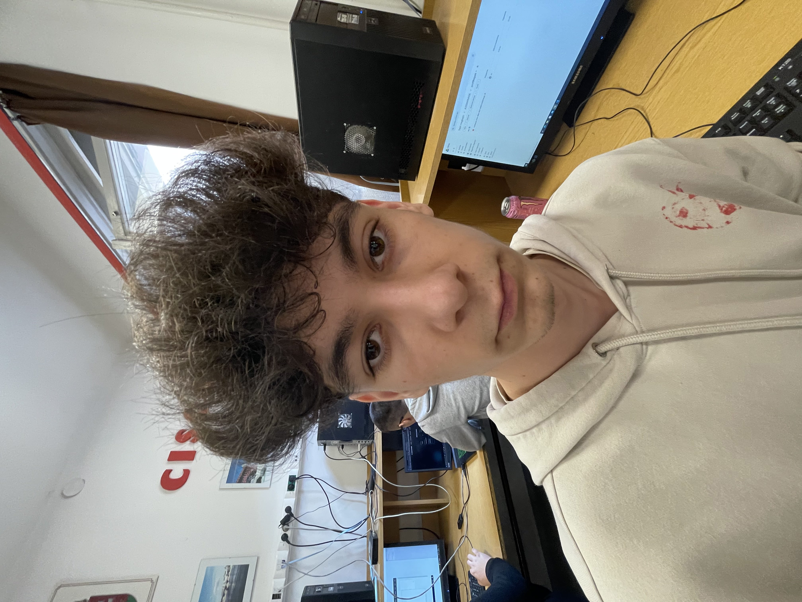

Csapatunk

Tímár Dániel
Prezentáló és dokumentáló
.jpg)
Weisz András
Hálózat- és szoftverfejlesztő

Rigó Milán
Webfejlesztő és helper
Modern szoftvermegoldások vállalkozások számára
Az AxisManage Software a modern vállalati hatékonyság záloga. Küldetésünk, hogy az összetett üzleti folyamatokat egyetlen, átlátható és automatizált rendszerbe integráljuk. Innovatív szoftvermegoldásunkat olyan vállalkozások számára fejlesztettük ki, amelyek szabadulni szeretnének az adminisztratív terhektől, és valódi adatvezérelt döntésekkel kívánják növelni versenyelőnyüket.
Csapatunk a legmodernebb technológiákat ötvözi a felhasználóbarát dizájnnal, így az AxisManage nem csupán egy eszköz, hanem egy stratégiai partner a cége napi működésében. Legyen szó erőforrás-tervezésről, munkafolyamat-automatizációról vagy egyedi webes alkalmazásokról, mi segítünk szintet lépni a digitális transzformáció útján.

Prezentáló és dokumentáló
Hálózat- és szoftverfejlesztő

Webfejlesztő és helper
Modern, gyors és reszponzív weboldalak és webalkalmazások.
Testreszabott rendszerek vállalkozások számára.
Technológiai és architekturális tanácsadás projektekhez.
A fejlesztési idő nagyban függ a projekt összetettségétől. Egy egyszerűbb webes alkalmazás 4-6 hét alatt elkészülhet, míg egy komplex vállalati irányítási rendszer (ERP) több hónapot is igénybe vehet. Minden esetben részletes ütemtervet adunk az ajánlatunk mellé.
Természetesen! Az AxisManage rendszereit modulárisan építjük fel, így a későbbiekben bármikor bővíthetők új funkciókkal vagy módosíthatók a meglévő folyamatok a vállalkozás növekedésével párhuzamosan.
A legmodernebb eszközöket használjuk: webfejlesztéshez React, Vue vagy Angular keretrendszereket, backend oldalon Node.js vagy Python alapú megoldásokat alkalmazunk, az adatbiztonságot pedig felhőalapú infrastruktúrával garantáljuk.